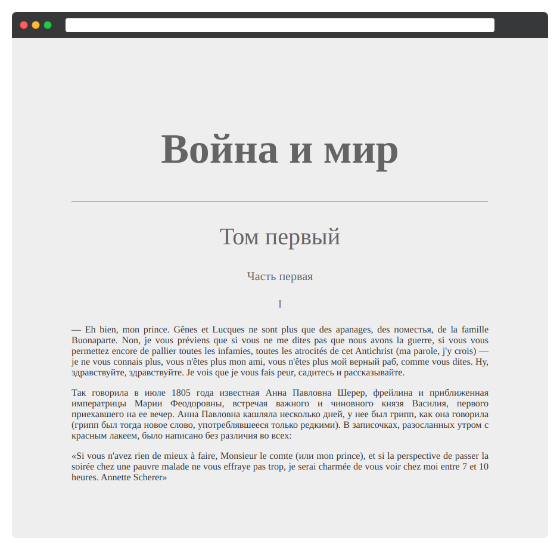

Создайте стили начала электронной книги «Война и мир». Добавьте необходимый текст и оформите его по заданным правилам

Война и мир. После заголовка поставьте горизонтальную черту. Используйте тег <hr>
Том первыйЧасть перваяI
Добавьте три параграфа с текстом:
— Eh bien, mon prince. Gênes et Lucques ne sont plus que des apanages, des поместья, de la famille Buonaparte. Non, je vous préviens que si vous ne me dites pas que nous avons la guerre, si vous vous permettez encore de pallier toutes les infamies, toutes les atrocités de cet Antichrist (ma parole, j'y crois) — je ne vous connais plus, vous n'êtes plus mon ami, vous n'êtes plus мой верный раб, comme vous dites. Ну, здравствуйте, здравствуйте. Je vois que je vous fais peur, садитесь и рассказывайте.
Так говорила в июле 1805 года известная Анна Павловна Шерер, фрейлина и приближенная императрицы Марии Феодоровны, встречая важного и чиновного князя Василия, первого приехавшего на ее вечер. Анна Павловна кашляла несколько дней, у нее был грипп, как она говорила (грипп был тогда новое слово, употреблявшееся только редкими). В записочках, разосланных утром с красным лакеем, было написано без различия во всех:
«Si vous n'avez rien de mieux à faire, Monsieur le comte (или mon prince), et si la perspective de passer la soirée chez une pauvre malade ne vous effraye pas trop, je serai charmée de vous voir chez moi entre 7 et 10 heures. Annette Scherer»
Оформите текст по следующим правилам:
#646464
70 пикселей.
40 пикселей.
20 пикселей.
18 пикселей.
16 пикселей и цвет #333.